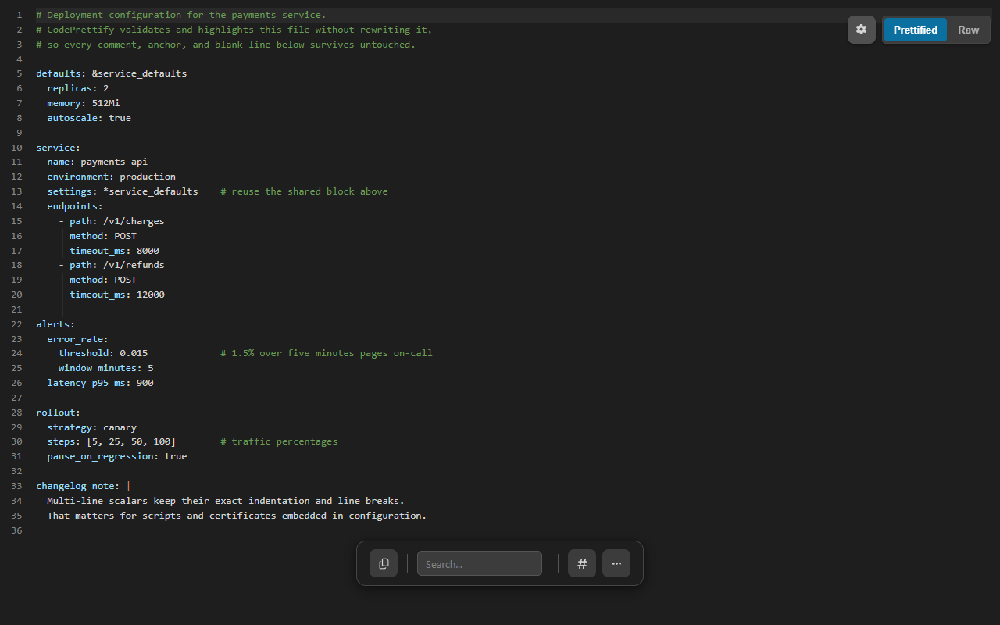

Most YAML formatters parse your file and dump it back out — and the re-dump can silently destroy comments, anchors, scalar styles, whitespace meaning, and numeric precision. CodePrettify validates, highlights, and folds YAML while leaving the text intact: only newlines are normalized, and everything runs on your device.
A deployment config with anchors, aliases, and inline comments — highlighted, foldable, and byte-for-byte unchanged.
Comment safety
A YAML formatter that validates without rewriting
A re-dumping formatter would return valid YAML that is no longer your YAML: comments deleted, the anchor expanded into three copies, and 1.30 rewritten as 1.3. CodePrettify deliberately refuses that trade.
The file you open
Messy but valid, and full of meaning
The comments document decisions, the anchor keeps the region defined once, and the trailing zero in 1.30 is intentional.
# service.yaml — three teams rely on these comments
region: ®ion eu-north-1
primary:
region: *region
replicas: 6 # peak traffic
backup:
region: *region
replicas: 2
version: 1.30 # trailing zero is intentional
In CodePrettify
Validated and highlighted, byte for byte
The document gets syntax highlighting, folding, and a validation verdict — while the text itself stays exactly as authored.
# service.yaml — three teams rely on these comments
region: ®ion eu-north-1
primary:
region: *region
replicas: 6 # peak traffic
backup:
region: *region
replicas: 2
version: 1.30 # trailing zero is intentional
i
The near-identical formatted view is the feature.
Formatting deliberately normalizes newlines instead of re-dumping the document, which could lose comments, anchors, scalar styles, whitespace meaning, or numeric precision. For the same reason, the copy menu offers no “minified” YAML — there is no safe equivalent, so CodePrettify refuses to pretend otherwise.
Hands-on tutorial
Validate a shared config end to end — without changing a byte
Use the service.yaml example above, or any .yaml or .yml file you actually work with. The goal is a confident verdict on the file, not a rewritten file.
Open the YAML document
In Chrome or Edge, open a raw .yaml or .yml file or URL — supported responses activate automatically, even when a compatible MIME type arrives without a recognizable filename. In the Windows app, open the file, or press Ctrl+N for Paste & Prettify and keep Auto-detect; detection recognizes YAML among the supported types.
Read the verdict first
The formatting indicator reports whether formatting succeeded, and the validation alert gives an exact line and column when the parser can locate the problem. Multi-document YAML — files with --- separators — is validated too.
Confirm nothing was rewritten
Press Ctrl+B to flip between Prettified and Raw. The only difference you should see is newline normalization: comments, anchors, quoting, and indentation are exactly as authored.
Navigate the structure
Use the gutter fold controls for one block, or More Actions → Collapse All / Expand All for the whole document. Line numbers, word wrap, and the minimap can be enabled independently.
Search and jump
Press Ctrl+F and search plain text, or wrap the query as /pattern/flags for a regular expression. Ctrl+G opens Go to Line when a validation message or a teammate points you at a specific line.
Copy the honest variants
The copy menu offers Original and Formatted. Minified is hidden for YAML on purpose — feedback always names exactly what was copied, and no variant quietly rewrites your document.
Check a change with semantic Compare
Press Ctrl+Alt+D. The left input starts with the current document; paste the other version on the right. Semantic mode is selected automatically when both sides parse as a supported structured format, and it ignores formatting and object-key order — switch to Text mode when you need exact line changes.
Before trusting a YAML change
Run through this list before committing or deploying a reviewed file.
The formatting indicator reports the document as valid — every document, if the file is multi-document.
Raw and Prettified differ only in newline normalization.
Comments, anchors, and quoting are exactly as authored.
The value you changed is confirmed with search or Go to Line.
Compare shows only the differences you intended.
Anything converted to JSON was reviewed for lost comments and rejected aliases.
Capabilities
What the YAML viewer gives you beyond validation
Validation you can act on
Strict parsing with a clear verdict
Exact line and column when locatable
Multi-document YAML validated
Deliberately preserved
Comments, anchors, and aliases
Scalar styles and quoting
Whitespace meaning
Numeric precision — 1.30 stays 1.30
Only newlines are normalized. Nothing else is touched.
Reading aids
Syntax highlighting and folding
Line numbers, word wrap, minimap
Search with optional regex
Go to Line
Honest copy and export
Copy Original or Formatted
No fake “Minified” for YAML
Download the source
Export-time conversion offers only targets the document can actually be serialized into
YAML across the toolset
Semantic Compare ignores formatting and key order
Diagram Generator maps YAML structure
JSON Repair & Transform accepts YAML, normalized to JSON values
Extension and Windows app
.yaml and .yml in both products
Paste & Prettify auto-detects YAML in the app
App per-format Settings include a YAML “Enabled by default” toggle

The same file in dark mode — Auto, Light, and Dark themes are a Settings toggle away.
YAML to JSON
Convert YAML to JSON when you actually need JSON
Conversion is a separate, explicit step — never something the formatter does behind your back. The Data Converter parses YAML values and serializes them as JSON, and Reverse switches direction to JSON → YAML.
YAML input
A config with a comment
Load it with Use document, or paste it into the Convert tab.
Open Data Converter from More Actions, the Command Palette, the Tools menu, or the extension launcher, and choose Use document on the Convert tab.
2
Convert — or reverse
Pick YAML → JSON and press Convert. Reverse moves the output into the input and selects JSON → YAML.
3
Take the result with you
Copy and Download sit beside the output. Incompatible operations are disabled with a reason instead of failing silently.
i
Honest conversion limits.
YAML conversion cannot preserve comments, anchors, tags, or scalar styling, and aliases that reuse arrays or objects are rejected outright to prevent unsafe expansion. Bounds: 500,000 values and 512 nesting levels, with 10 Mi characters of input and 32 Mi characters of output. Unsafe integers and decimals that JavaScript would silently change are refused rather than corrupted.
Failure guide
When it refuses, it tells you why
What you see
What it means
Best next action
The formatted view looks almost identical to the raw file
Deliberate: YAML is validated and highlighted, with only newlines normalized — never re-dumped.
Trust it. Toggle Raw with Ctrl+B if you want to verify.
The copy menu has no Minified option
There is no safe minified equivalent for YAML, so a misleading variant is not offered.
Copy Formatted or Original instead.
A validation alert with a line and column
The parser located a syntax problem at that position.
Press Ctrl+G to jump there and fix the source.
YAML → JSON rejects the document over an alias
An alias reuses an array or object; expanding it could blow up the output unsafely.
Restructure or expand the alias manually, deciding deliberately where duplication is acceptable.
The converted JSON has no comments or anchors
JSON cannot represent comments, anchors, tags, or scalar styling.
Keep the YAML file as the source of truth; treat the JSON as a derived artifact.
Conversion refuses a very large or deep document
The 500,000-value or 512-nesting-level bound was exceeded, or input passed 10 Mi characters.
Split the document or convert the section you need.
FAQ
YAML formatter questions
Why doesn't the YAML formatter rewrite or re-indent my file?
Because re-dumping YAML can silently lose comments, anchors, scalar styles, whitespace meaning, and numeric precision. CodePrettify validates, highlights, and folds the document and only normalizes newlines, so the text you copy out is the text you opened.
Can it convert YAML to JSON?
Yes. The Data Converter parses YAML values and serializes them as JSON, and Reverse switches to JSON to YAML. Conversion cannot preserve comments, anchors, tags, or scalar styling, and aliases that reuse arrays or objects are rejected outright to prevent unsafe expansion.
Does it validate multi-document YAML files?
Yes. Multi-document YAML is validated, and the validation alert reports an exact line and column when the parser can locate the problem.
Is my YAML uploaded anywhere?
No. Formatting, validation, conversion, and comparison stay on the device, and the extension works without an account. Nothing is sent to a server.
Open the file, get a validation verdict with line and column, and keep every comment, anchor, and trailing zero exactly where you put it — on your own device.